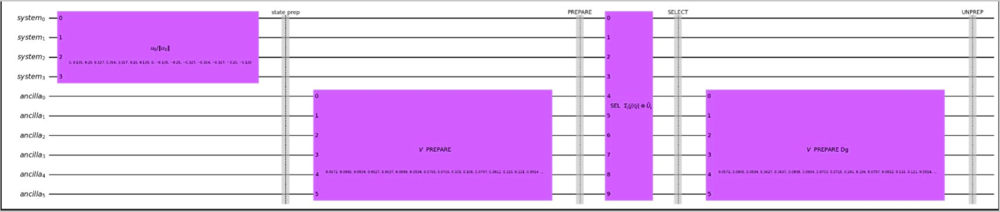

Quantum Solution of the 1D Heat Equation via LCHS
Numerical Solutions of Differential Equations Course · IISc CDS, 2026 · GitHub Repository →
An implementation of the Linear Combination of Hamiltonian Simulation (LCHS) algorithm in Qiskit, applied to solving the 1D diffusion equation on a quantum computer. The quantum solution is rigorously benchmarked against the classical Forward-Time Centered-Space (FTCS) finite difference method, with analysis in both physical and spectral domains.
The Problem: 1D Diffusion Equation
The one-dimensional diffusion (heat) equation is one of the most fundamental PDEs in mathematical physics, describing how heat, concentration, or any diffusing quantity spreads over time. We study the problem:
∂u/∂t = α(t) · ∂²u/∂x²
on the domain x ∈ [0, 2π] with periodic boundary conditions u(0, t) = u(2π, t), and a time-dependent diffusion coefficient α(t). The initial condition is a smooth function on the periodic domain.
Despite its apparent simplicity, this equation is a canonical test case for quantum algorithms for linear differential equations. It has a known analytical solution via Fourier series, which allows for rigorous error quantification. The time-dependent coefficient α(t) makes the problem non-trivial — the system is not time-homogeneous, so simple matrix exponentiation does not apply directly.
Why study this on a quantum computer? Quantum algorithms for linear systems of equations (HHL and its successors) promise exponential speedups in certain regimes. Quantum algorithms for differential equations, including LCHS, are an active research area exploring whether similar advantages extend to time-evolution problems.
The LCHS Algorithm
The Linear Combination of Hamiltonian Simulation (LCHS) algorithm, developed by An, Liu, and Lin (2023), provides a way to solve linear ODEs of the form du/dt = A(t)u using a quantum computer, where A(t) is a time-dependent matrix.
Core Idea
The key insight is that the solution operator U(t) = exp(∫₀ᵗ A(s) ds) can be approximated as a linear combination of unitary operators — specifically, as a weighted integral of Hamiltonian simulation operators:
U(T) ≈ ∫ k(t) · e^{iHt} dt
where k(t) is a kernel function and H is a Hermitian matrix related to A. The integral is discretised using numerical quadrature, turning it into a finite sum of unitaries that can be implemented as a quantum circuit.
This formulation is powerful because quantum computers can implement Hamiltonian simulation e^{iHt} efficiently — it is one of the tasks for which quantum computers have a known advantage. The LCHS method thus converts a linear ODE into a sequence of Hamiltonian simulation problems.
Spatial Discretisation
The spatial domain [0, 2π] is discretised into N = 16 grid points, converting the PDE into a system of ODEs. With periodic boundary conditions, the discrete Laplacian (∂²/∂x²) becomes a circulant matrix, which is efficiently represented and diagonalised via the Discrete Fourier Transform.
Choosing N = 16 = 2⁴ means the discretised state vector has exactly 16 components, requiring 4 qubits to represent. This makes the circuit size manageable for simulation while still capturing the essential physics.
Gauss–Legendre Quadrature
The time integral in the LCHS formula is approximated using 64 Gauss–Legendre quadrature nodes on [0, T]. Each node tⱼ corresponds to a Hamiltonian simulation circuit e^{iH·tⱼ}, implemented as a controlled unitary block in the full quantum circuit. The quadrature weights wⱼ serve as the linear combination coefficients.
Gauss–Legendre quadrature achieves optimal convergence for smooth integrands — using 64 nodes provides high accuracy while keeping the circuit complexity tractable. The choice of quadrature rule directly determines the approximation error of the algorithm.
Quantum Circuit Structure
The full quantum circuit implementing LCHS consists of:
- State preparation (state prep block): The 4 system qubits (system₀–system₃) are initialised to u₀/‖u₀‖, encoding the initial condition as a quantum amplitude vector.
- V PREPARE: The 6 ancilla qubits are loaded with the Gauss–Legendre quadrature weights, preparing a superposition over the 64 quadrature nodes.
- SELECT (controlled unitaries): For each quadrature node index j, a controlled unitary SEL Σⱼ |j⟩⟨j| ⊗ Ûⱼ applies the corresponding Hamiltonian simulation block e^{iH·tⱼ} to the system register, conditioned on the ancilla.
- V PREPARE† (UNPREP): The ancilla is uncomputed, projecting the system register onto the desired linear combination. Measurement yields amplitudes proportional to the solution u(x, T).

Full Qiskit circuit: 4 system qubits + 6 ancilla qubits implementing the LCU-based LCHS algorithm. Left to right: state prep → V PREPARE → SELECT → UNPREP.
Classical Baseline: FTCS
The quantum result is benchmarked against the Forward-Time Centered-Space (FTCS) finite difference method — the most straightforward explicit time-stepping scheme for the heat equation.
FTCS discretises both time and space and advances the solution one step at a time:
uᵢⁿ⁺¹ = uᵢⁿ + α·Δt/Δx² · (uᵢ₊₁ⁿ − 2uᵢⁿ + uᵢ₋₁ⁿ)
Stability requires the CFL condition α·Δt/Δx² ≤ ½. With N=16 and the chosen parameters, this is easily satisfied.
FTCS is used as both a correctness check (the quantum and classical solutions should agree) and a baseline for understanding where the quantum solution deviates or accumulates error.
Results & Analysis
The results are presented across three complementary visualisations, each probing a different aspect of the quantum solution's accuracy.
Spatial Profiles
Snapshots of u(x, t) at several time points compare the quantum (LCHS), classical (FTCS), and analytical solutions on the same plot. For small to moderate times, the quantum solution tracks the classical solution closely. At larger times the diffusion drives the solution toward a uniform distribution, and both methods converge to the same equilibrium.
Amplitude Decay Curves
The L2 norm ‖u(·, t)‖₂ decays exponentially with time due to diffusion. Plotting this for all three methods reveals how well the quantum algorithm captures the global energy dissipation. Any systematic error in the LCHS approximation — from quadrature truncation or circuit depth limits — appears as a deviation in the decay rate.
Fourier Spectral Analysis
Taking the Discrete Fourier Transform of u(x, t) decomposes the solution into modes. For the heat equation, each Fourier mode decays independently as û_k(t) = û_k(0) · exp(−k² · ∫₀ᵗ α(s) ds). Comparing the modal amplitudes from LCHS and FTCS against this analytical formula gives a precise, mode-by-mode error budget — revealing which spatial frequencies are captured accurately and where the quantum approximation struggles.
Finding: The LCHS algorithm accurately reproduces the classical solution for low-frequency modes (long-wavelength behaviour). High-frequency modes, which decay fastest and are most sensitive to approximation errors in the time integration, show somewhat larger relative errors — consistent with the expected behaviour of a quadrature-based approximation.
Code & Repository
The full implementation — Qiskit circuits, FTCS solver, quadrature setup, and analysis notebooks — is available on GitHub.